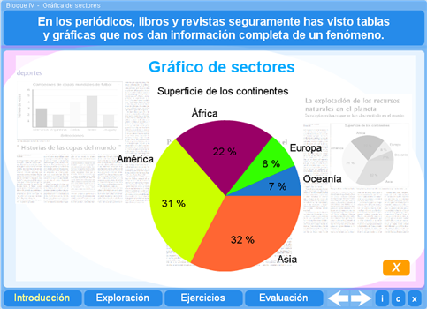

Inicio
Sentido numérico y pensamiento algebraico
Forma, espacio y medida
Actitud hacia las matemáticas
Pictograma
Proviene del Proyecto Canals
Subir
Recuento de datos
Proviene del Proyecto Canals
Subir
Frecuencia
Proviene del Proyecto PI
Subir
Noción de media aritmética
Proviene del Proyecto Canals
Subir
Gráfica de barras
Proviene del Proyecto PI
Subir
Gráfica circulares
Proviene del Proyecto PI

Subir
Gráfica de líneas
Proviene del Proyecto PI
Subir
Archivos de hoja de cálculo
Cardiopatias
Escala de Actitudes
Mediana
Analisis de calificaciones
Subir